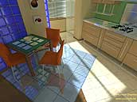

Nick Chirkov. Fast Line-Segment Triangle Intersection. Journal
of graphics tools, 2(1):21-28, 2005
Fast 3D Line-Segment Triangle Intersection Test
Nick Chirkov
ArtyShock LLC
nickchir@artyshock.net
- Abstract:
-
I present a clean algorithm for determining if a line-segment intersects a
triangle or not. The algorithm performs a few binary tests that check if a
point of intersection of the line-segment and triangle plane is inside the
triangle. Then I present some essential optimizations for this algorithm that
reduce overall computation complexity. The algorithm does not compute an
intersection point.The algorithm is comparable with others but I believe it is
the fastest one when additional memory storage is available.
-
Source code:
-
Downloadable C++ source code implements
the algorithm described in this paper
-
Statistical Analysis:
-
A report on
the efficiency of this algorithm as compared with Moller-Trumbore algorithm.
-
Images:
| 
|
|
Kitchen Scene from
ArtyShock Engine
|
Cornell Box Global
Illumination test scene
|
Return to jgt home page
{kind=link}
{kind=link}